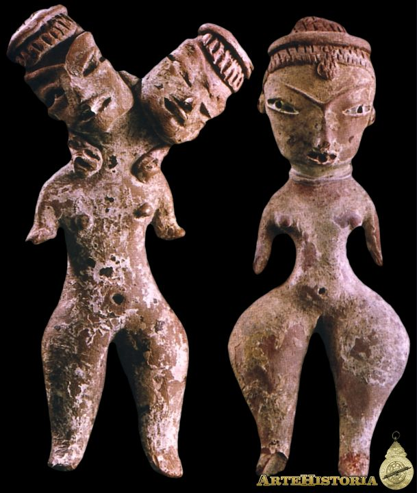
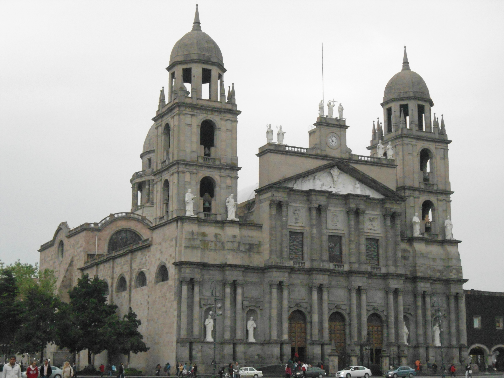

El estado de México conserva un gran bagaje cultural sobre todo, por los pueblos que lo han habitado a lo largo de la historia del país, así como de los diversos momentos históricos que ha vivido desde los tiempos prehispánicos, pasando por la Colonia, la Independencia y la Revolución en el estado entres sus principales exponentes de la literatura y poesía,están Nezahualcóyotl y Sor Juana Inés de la Cruz, dos grandes de la literatura universal en México, ambos nacidos en esta entidad y principales íconos de la belleza en las letras. En la pintura los máximos exponentes del estado, se encuentra José María Velasco Gómez, temascalcinguense que solía pintar paisajes. En la escultura los máximos exponentes son: las figuras de barro de la cultura Tlatilca, la cual, sobresale por el dinamismo de forma en las esculturas de arcilla.
Uno los pintores destacados está Luis Nishizawa Flores, uno de los grandes maestros que logró aplicar técnicas de abstracción de la realidad. Mientras que para la arquitectura esta la Fuente de los Amantes en Atizapán de Zaragoza, por el arquitecto Luis Barragán. México es uno de los estados que destaca por su arquitectura ya que la tradición de tlaquitquis o alarifes se conservó con elegancia desde tiempos prehispánicos a la actualidad, los frailes españoles se dieron cuenta de la finura y calidad de trabajo entre los indígenas, herencia precolombina que desarrollaron en su arquitectura, lo cual se ve expresado al labrar las piedras y canteras de los edificios coloniales y modernos.
